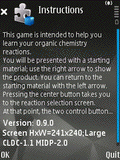
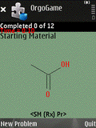
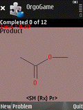
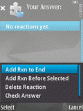
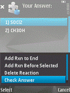
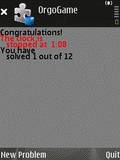

It has been developed by Brian White at the University of Massachusetts, Boston.
This game requires that your cell phone have Java capability. It has been found to work on the following phones/providers:
You either click on this link or enter this url into your cell phone's
web-browser:
http://intro.bio.umb.edu/wml/
You then click to download the game. This process differs on different phones.
How does it work?
The game consists of one or more Problem Sets. A problem set is a set of several related interconvertable molecules. The game randomly chooses pairs of these molecules - a starting material and a product - and your task is to determine the reaction or reactions required to turn the starting material into the product. When you think you have the correct set of reactions, you can ask the program to tell you if you've got it right. Once you have successfully solved all the possible conversions, you are done. The program keeps track of how long it took you to complete the problem set so that you can practice for better and better times to prepare you for timed exams.
Since this game runs entirely on your cell phone, you do not need cell phone service to run it once you have downloaded it.
How do I use it?
First, find the game file on your cell phone and run it. This process differs on different phones.
1) You should see a welcome screen like this. The details will
vary depending on the particular phone you have.
|
 |
2) You should see the Starting Material for the first reaction.
|
 |
3) You should see the Product for the first reaction.
|
 |
4) You should see the Reaction Selection screen.
|
 |
|
5) Here is a sample reaction list.
|
 |
6) If you've got it right, you'll see this.
|
 |
Are there more problem sets available?
Right now, there is only one problem set. I am looking for collaborators to develop more. You do not need to know Java to develop problem sets; only organic chemistry.
If you are interested, contact Brian White.